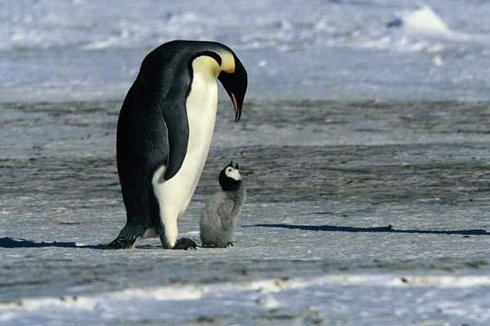
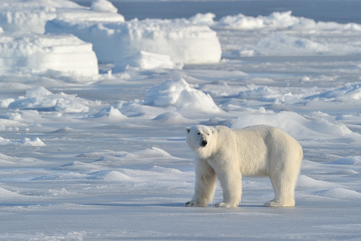

PUSTYNIE LODOWEJest to obszar wiecznych lodów w strefie polarnej, pozbawiony roœlinnoœci i sta³ego zaludnienia. Zwierzêta zdolne przetrwaæ w tak trudnych warunkach maj¹ bardzo specyficzn¹ budowê (przede wszystkim bardzo rozwiniêta tkanka t³uszczowa) oraz ubarwienie (pozwalaj¹ce na ukrycie siê na lodzie i w œniegu). Pory roku s¹ dwie, wyznaczane przez dzieñ i noc polarn¹. Klimat: temperatury poni¿ej 0°C przez ca³y rok (od -10°C latem, do -50°C zim¹), opady œniegu, silne wiatry Roœlinnoœæ: brak Zwierzêta: foki, morsy, wieloryby (w tym orki), w Arktyce niedŸwiedzie polarne, w Antarktyce pingwiny  |
 |